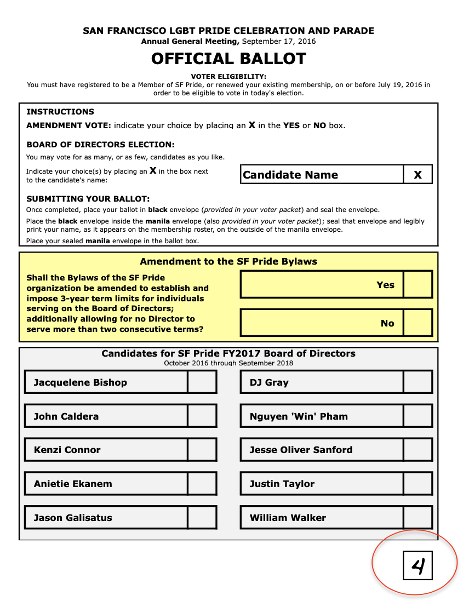
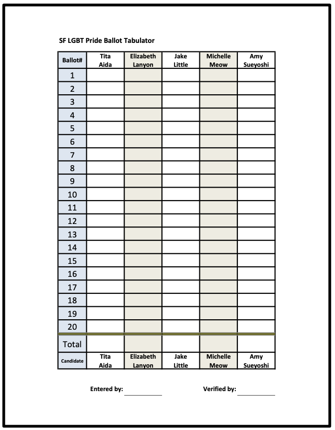

Instructions for Election Officials
Instructions for Election Officials
Thank you for serving as an election official for the SF Pride 2020 Board of Directors Election.
Election Inspectors
There will be three Election Inspectors. Their role is to verify voter eligibility; certify ballots; count, tally; record and announce results; as well as overseeing compliance with all provisions of the election policies and procedures.
Election Observers
There will be two Election Observers. Their role is to observe all election processes, including: voter eligibility verification; ballot certification; vote, tally & count; and determination and announcement of election results. As well as, documenting and objection to any irregularities in the election processes, especially violations of any provision of the corporations bylaws, or any provision of the election policies and procedures.
Number of Candidates
There are 7 candidates on the ballot.
Number of Available Seats
There are 7 available seats on the Board of Directors.
Polling Hours
- Polls will open when officially announced by the Election Inspectors.
- Polls will close 10 minutes aQer the close of candidate statements and Q&A.
- No ballots will be accepted aQer the close of the polls.
Determination of Winners
- In order to win election, a candidate must receive a simple majority (50% of the votes +1) of all votes cast.
- If the number of candidates receiving a simple majority exceeds the number of vacant seats, the candidates receiving the highest number of votes shall be elected.
- In the event of a tie, an immediate run-off election will be conducted for any open seats.
- If the run-off produces another tie, the voting with respect to the candidates in question will be postponed until the next general planning meeting.
Voter Packets
Each member that is eligible to vote will receive a voter packet containing:
- A pamphlet explaining the vo(ng process.
- A ballot
- A black envelope
- A manila envelope
- A pencil
The Voting Process
Step 1
Members will indicate who they are voting for by placing an X next to the names of the candidates of their choice. They may vote for as many, or as few, of the candidates as they wish.
Step 2
Members will place completed ballots in a black envelope and seal it.
Step 3
Members will place the black envelope inside a manila envelope and print their name, as it appear on our membership roster, on the outside of the envelope.
Step 4
Members will bring their sealed envelope to the Election Inspectors.
Step 5
Using a list of eligible voters provided by the Executive Director, Election inspectors will
- Verify voter eligibility and indicate verification by initialing the manila envelope.
- Initial the voter roster, indicating the member has voted.
- Return the manila envelope to the voting member for placement in the ballot box.
- If the name on the envelope is not on the list of eligible voters, it should be marked “NOT ON ROSTER”, initialed and placed in the NOT ON ROSTER envelope.
Step 6
At the close of the polling, Election Inspectors will follow the procedures on the following pages for tallying, recording and announcing results.
Step 7
To be conducted by an Elec(on Inspector, and verified by a second Elec(on Inspector
- Open the ballot box.
- Confirm all envelopes have been ini(aled by the Elec(on Inspectors.
- If an envelope is found in the ballot box that has not been ini(aled, it must be checked against the eligible voter list and processed accordingly.
- Count all eligible envelopes to be processed.
Step 8
Election Inspectors will open all manila envelops and remove the black envelope. The manila envelopes will be placed together in an envelope and sealed.
Step 9
Election Inspectors will shuffle the black envelopes prior to opening and removing the ballots.
Step 10
To be conducted by an Election Inspector, and verified by a second Election Inspector:
Remove all ballots from the black envelopes and number them sequentially as indicated below:
Step 11
Once the ballots have been numbered, each Inspector will tally 20 ballots per page using the tally sheets provided. Each inspector should ini(al the “Entered By” box for the sheet they tallied.
Step 12
Once all ballots have been tallied, each inspector will validate/confirm the accuracy of the data entry of those sheet(s) they did not ini(ally tally.
Step 13
Once data entry has been verified, winners will be tabulated and announced.
The Voting Process
Step 1
Members will indicate who they are voting for by placing an X next to the names of teh candidates of their choice. They may vote for as many, or as few, of the candidates as they wish.
Step 2
Members will place completed ballots in a black envelope and seal it.
Step 3
Members will place the black envelope inside a manila envelope and print their name, as it appear on our membership roster, on the outside of the envelope.
Step 4
Members will bring their sealed envelope to the Election Inspectors.
Step 5
Using a list of eligible voters provided by the Executive Director, Election inspectors will
- Verify voter eligibility and indicate verification by initialing the manila envelope.
- Initial the voter roster, indicating the member has voted.
- Return the manila envelope to the voting member for placement in the ballot box.
- If the name on the envelope is not on the list of eligible voters, it should be marked “NOT ON ROSTER”, initialed and placed in the NOT ON ROSTER envelope.
Step 6
At the close of the polling, Election Inspectors will follow the procedures on the following pages for tallying, recording and announcing results.
Step 7
To be conducted by an Elec(on Inspector, and verified by a second Elec(on Inspector
- Open the ballot box.
- Confirm all envelopes have been ini(aled by the Elec(on Inspectors.
- If an envelope is found in the ballot box that has not been ini(aled, it must be checked against the eligible voter list and processed accordingly.
- Count all eligible envelopes to be processed.
Step 8
Election Inspectors will open all manila envelops and remove the black envelope. The manila envelopes will be placed together in an envelope and sealed.
Step 9
Election Inspectors will shuffle the black envelopes prior to opening and removing the ballots.
Step 10
To be conducted by an Election Inspector, and verified by a second Election Inspector:
Remove all ballots from the black envelopes and number them sequentially as indicated below:
Step 11
Once the ballots have been numbered, each Inspector will tally 20 ballots per page using the tally sheets provided. Each inspector should ini(al the “Entered By” box for the sheet they tallied.
Step 12
Once all ballots have been tallied, each inspector will validate/confirm the accuracy of the data entry of those sheet(s) they did not ini(ally tally.
Step 13
Once data entry has been verified, winners will be tabulated and announced.